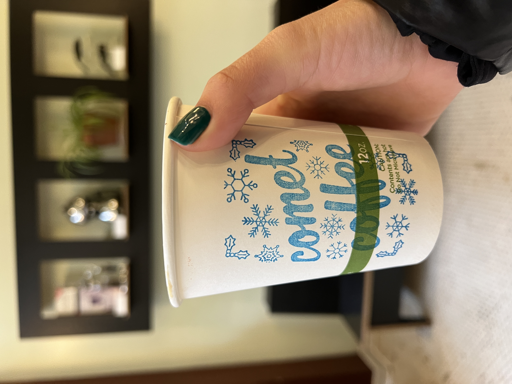
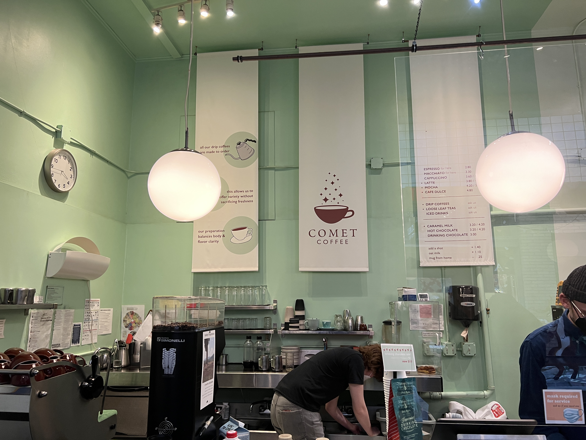
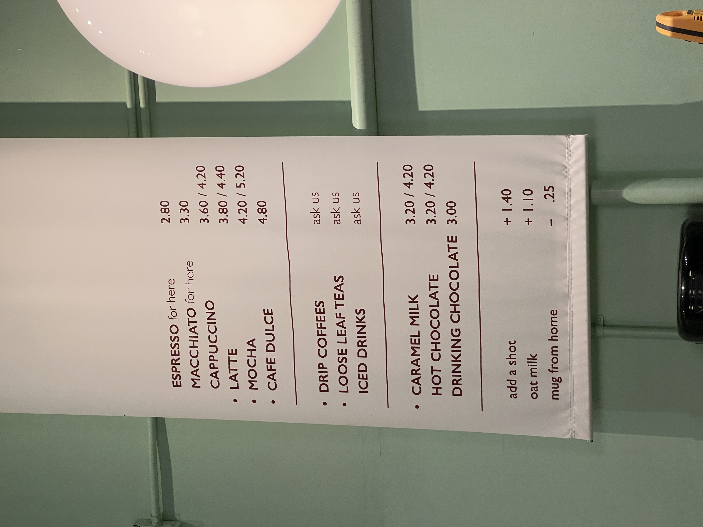
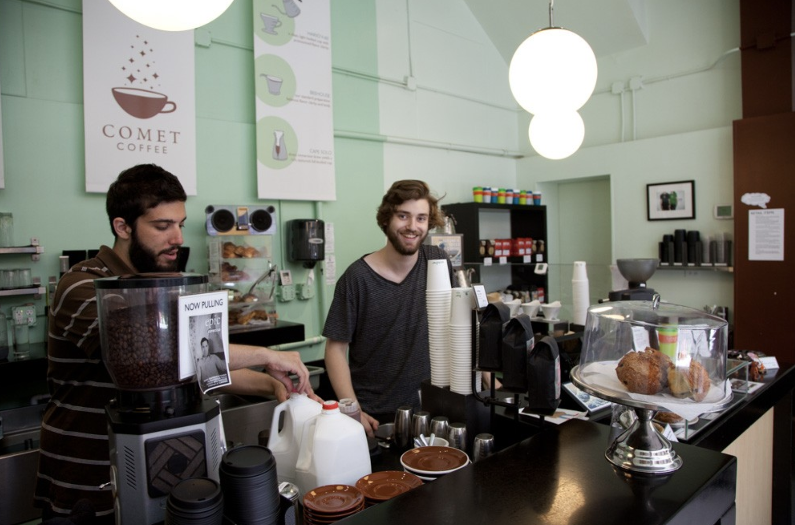
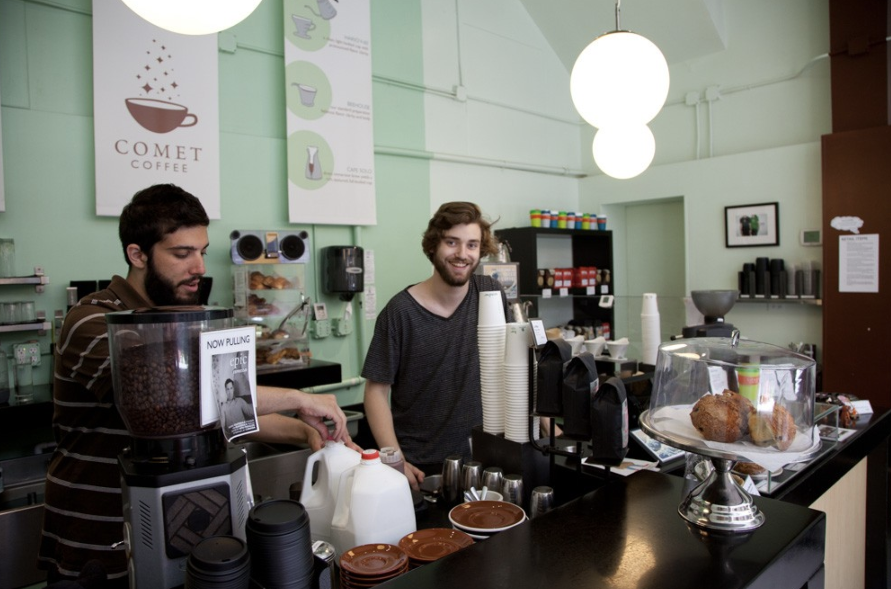
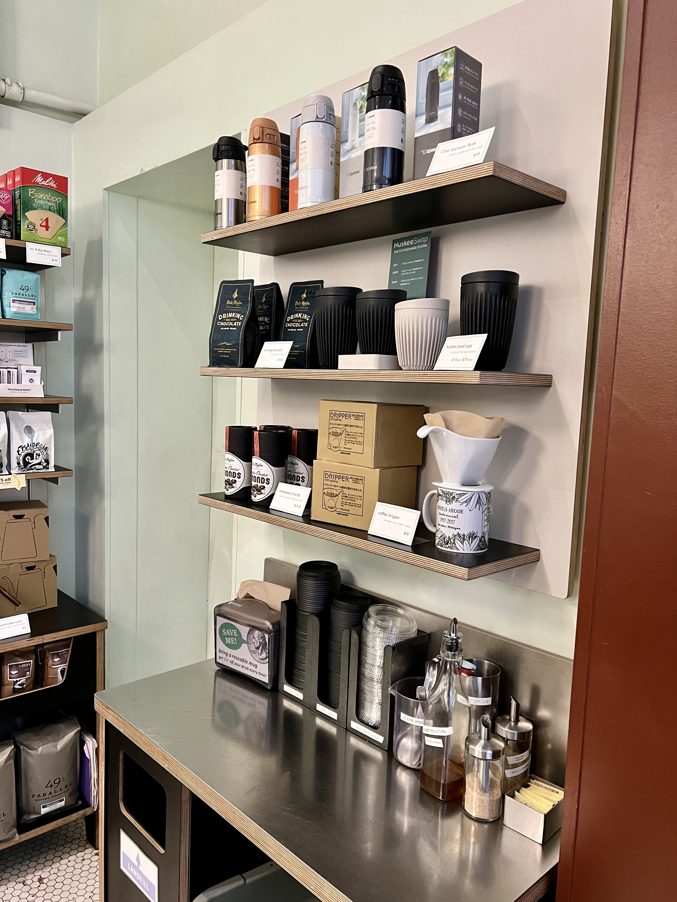
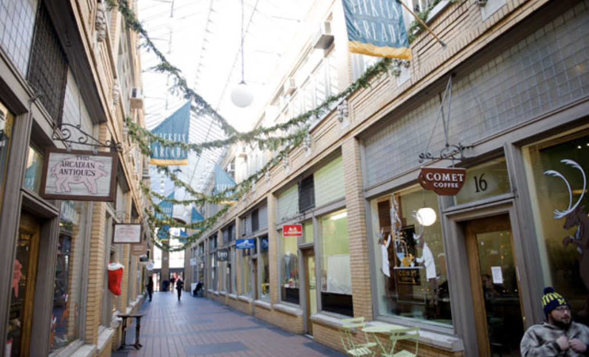
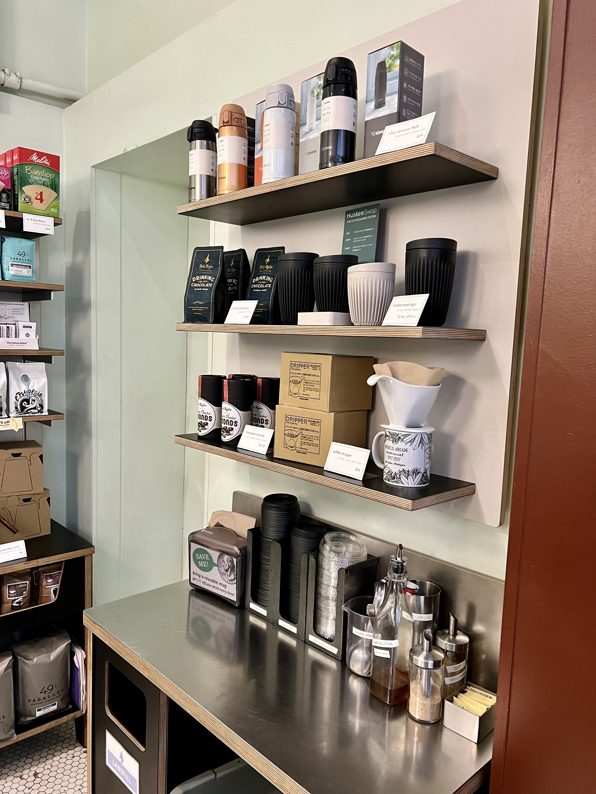
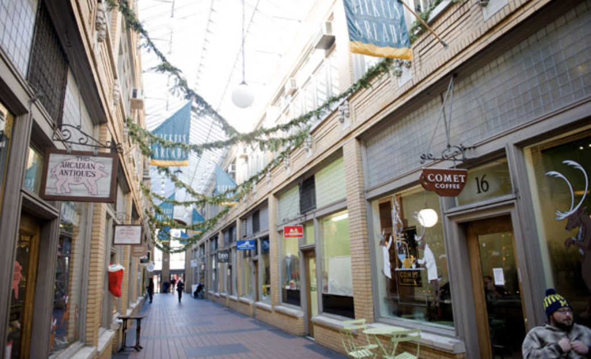

Comet Coffee was my second stop of the tour which was in a very unique location. It is hidden in Nickels Arcade off of State Street. This is prime for students who have class in this area or live in West or South squad. Lets dive a bit deeper into why I gave Comet Coffee a 7/10!
I ordered a gingerbread latte and a butter croissant; however, the coffee was a too strong for my liking. There is not much space for seating in Comet since it is smaller, but I did like the bright colors and decor inside. If you are looking to grab a quick coffee and pastry, this is definitely the place for you. However, if you are meeting up with a friend or trying to find a new study place, Comet Coffee is not the best option for that. The pricing was very reasonable and I did enjoy my overall experience!
"Cute little cafe with nice ambience! I ordered Maple syrup anise latte. It tastes interesting. Good for one time try but probably not something I will order again. Anyway, I like this cafe's atmosphere a lot. Their tables are small but it feels pleasant to be there" REVIEW FROM CUSTOMER
   


 


